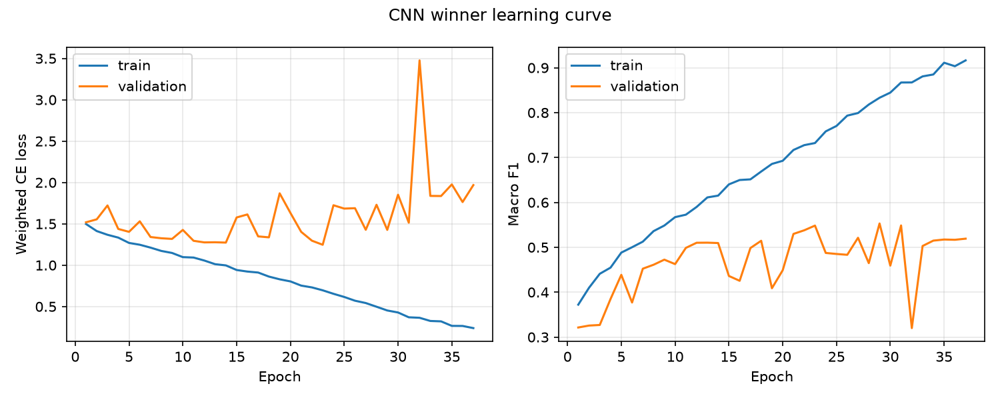
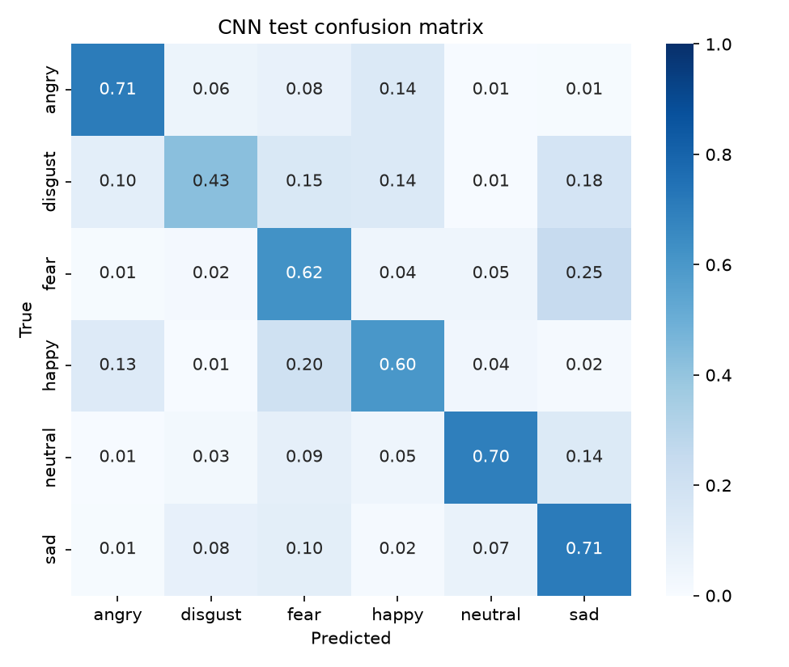
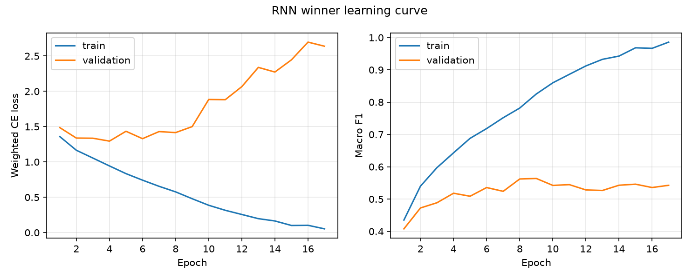
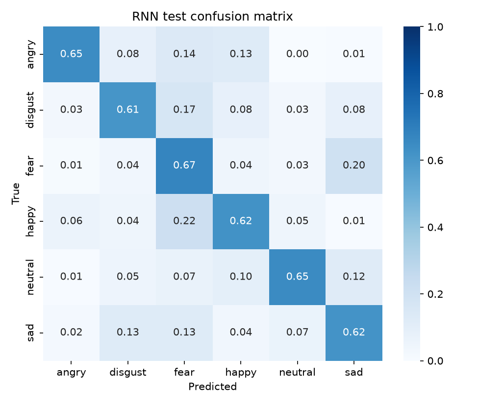

Bu rapor, CREMA-D veri seti üzerinde konuşmadan duygu tanıma için uygulanan iki yöntemin geliştirme ve değerlendirme sürecini özetler. Tüm sayılar, tablolar ve görseller koşulan deneylerin kayıtlı çıktılarından otomatik üretilmiştir.
CREMA-D, 91 aktörün 12 cümleyi altı duyguyla (kızgın, tiksinti, korku, mutlu, nötr, üzgün) seslendirdiği 7.442 kayıttan oluşur [1]. Bölme aktör kimliğine göre yapıldı: bir konuşmacının tüm kayıtları tek kümede kalır. Kayıt-bazlı rastgele bölme, aynı sesin hem eğitimde hem testte görünmesine yol açarak sonuçları yapay olarak şişirir [11, 12]; bu nedenle raporlanan tüm sonuçlar konuşmacı-bağımsızdır.
| Küme | Kayıt | Konuşmacı | Oran |
|---|---|---|---|
| Eğitim | 5234 | 64 | %70.3 |
| Geçerleme | 1148 | 14 | %15.4 |
| Test | 1060 | 13 | %14.2 |
| Duygu | Eğitim | Geçerleme | Test |
|---|---|---|---|
| Kızgın | 894 | 196 | 181 |
| Tiksinti | 894 | 196 | 181 |
| Korku | 894 | 196 | 181 |
| Mutlu | 894 | 196 | 181 |
| Nötr | 764 | 168 | 155 |
| Üzgün | 894 | 196 | 181 |
Altı sınıflı ve hafif dengesiz bu problemde tek başına doğruluk yanıltıcı olabileceğinden dört metrik birlikte raporlandı: doğruluk, dengeli doğruluk (sınıf başına duyarlılık ortalaması; literatürdeki UA karşılığı), macro-F1 (tüm sınıflara eşit ağırlık) ve ağırlıklı F1. Model seçimi ve erken durdurma macro-F1 üzerinden yapıldı [6, 11]. Sınıf bazında kesinlik/duyarlılık/F1 ve karışıklık matrisleri de verildi.
Her kayıt tek kanallı bir log-mel spectrogram görüntüsüne çevrildi ve sıfırdan tanımlanan bir CNN ile sınıflandırıldı. Ağ, Conv-BN-ReLU çiftleri ve 2x2 max pooling içeren bloklardan sonra global average pooling ve tek bir doğrusal katmandan oluşur; hazır ya da önceden eğitilmiş hiçbir model kullanılmadı [2, 4].
Geçerleme kümesinde 11 aday tarandı; ardından kazanan etrafında 8 adaylık yerel iyileştirme turu koşuldu. Seçim ölçütü geçerleme macro-F1 değeridir; test kümesine yalnızca nihai kazanan dokundu.
| Aşama | Öznitelik | Model | Parametre | En iyi epoch | Geçerleme doğruluk | Geçerleme macro-F1 |
|---|---|---|---|---|---|---|
| iyileştirme | 64x128 mel | kanallar 32x64x128, dropout 0.3, lr 0.001, batch 16 | 287654 | 29 | 0.5575 | 0.5531 |
| iyileştirme | 64x128 mel | kanallar 32x64x128, dropout 0.2, lr 0.001, batch 32 | 287654 | 14 | 0.5601 | 0.5528 |
| iyileştirme | 64x128 mel | kanallar 64x128x256, dropout 0.3, lr 0.001, batch 32 | 1146694 | 19 | 0.5523 | 0.5495 |
| iyileştirme | 64x128 mel | kanallar 32x64x128, dropout 0.3, lr 0.0005, batch 32 | 287654 | 14 | 0.5505 | 0.5446 |
| iyileştirme | 64x128 mel | kanallar 32x64x128, dropout 0.4, lr 0.001, batch 32 | 287654 | 25 | 0.5462 | 0.5441 |
| arama | 64x128 mel | kanallar 32x64x128, dropout 0.3, lr 0.001, batch 32 | 287654 | 14 | 0.5453 | 0.5415 |
| iyileştirme | 64x128 mel | kanallar 32x64x128, dropout 0.3, lr 0.002, batch 32 | 287654 | 15 | 0.5409 | 0.5364 |
| arama | 64x128 mel | kanallar 32x64x128, dropout 0.5, lr 0.0003, batch 32 | 287654 | 22 | 0.5348 | 0.5350 |
| arama | 80x128 mel | kanallar 32x64x128, dropout 0.3, lr 0.0003, batch 32 | 287654 | 14 | 0.5366 | 0.5298 |
| iyileştirme | 64x128 mel | kanallar 16x32x64, dropout 0.3, lr 0.001, batch 32 | 72406 | 16 | 0.5296 | 0.5284 |
| iyileştirme | 64x128 mel | kanallar 32x64x128, dropout 0.3, lr 0.001, batch 64 | 287654 | 14 | 0.5348 | 0.5244 |
| arama | 64x96 mel | kanallar 32x64x128, dropout 0.3, lr 0.0003, batch 32 | 287654 | 11 | 0.5314 | 0.5204 |
Kazanan yapılandırma: 64x128 mel; kanallar 32x64x128, dropout 0.3, lr 0.001, batch 16; 287,654 öğrenilebilir parametre; en iyi epoch 29.

| Küme | Doğruluk | Dengeli doğruluk | Macro-F1 | Ağırlıklı F1 |
|---|---|---|---|---|
| Geçerleme | 0.5575 | 0.5604 | 0.5531 | 0.5518 |
| Test | 0.6264 | 0.6281 | 0.6282 | 0.6256 |
| Duygu | Örnek | Kesinlik | Duyarlılık | F1 |
|---|---|---|---|---|
| Kızgın | 181 | 0.7314 | 0.7072 | 0.7191 |
| Tiksinti | 181 | 0.6937 | 0.4254 | 0.5274 |
| Korku | 181 | 0.5045 | 0.6243 | 0.5580 |
| Mutlu | 181 | 0.6089 | 0.6022 | 0.6056 |
| Nötr | 155 | 0.7770 | 0.6968 | 0.7347 |
| Üzgün | 181 | 0.5560 | 0.7127 | 0.6247 |

Her kayıt, sayısı ve genişliği hiperparametre olan eşit aralıklı pencerelere bölündü; her aralıktan MFCC ortalama/std, delta-MFCC, RMS enerji, sıfır geçiş oranı ve spektral centroid/rolloff istatistikleri çıkarılarak sabit uzunlukta bir öznitelik serisi elde edildi [6, 9]. Seri, sıfırdan eğitilen LSTM/GRU tabanlı bir ağa verildi; zaman boyutu son adım/ortalama/maksimum/dikkat havuzlamasıyla özetlendi [6, 7].
Geçerleme kümesinde 16 aday tarandı; ardından kazanan etrafında 9 adaylık yerel iyileştirme turu koşuldu. Seçim ölçütü geçerleme macro-F1 değeridir; test kümesine yalnızca nihai kazanan dokundu.
| Aşama | Öznitelik | Model | Parametre | En iyi epoch | Geçerleme doğruluk | Geçerleme macro-F1 |
|---|---|---|---|---|---|---|
| iyileştirme | 32 aralık x 200 ms | GRU, gizli 192, 2 katman, çift yönlü, mean havuz, lr 0.001, batch 64 | 942342 | 9 | 0.5636 | 0.5638 |
| iyileştirme | 24 aralık x 200 ms | GRU, gizli 192, 2 katman, çift yönlü, mean havuz, lr 0.001, batch 64 | 942342 | 9 | 0.5618 | 0.5619 |
| iyileştirme | 24 aralık x 200 ms | GRU, gizli 192, 2 katman, çift yönlü, mean havuz, lr 0.001, batch 64 | 942342 | 11 | 0.5671 | 0.5613 |
| arama | 24 aralık x 200 ms | GRU, gizli 192, 2 katman, çift yönlü, mean havuz, lr 0.001, batch 64 | 942342 | 10 | 0.5662 | 0.5612 |
| arama | 32 aralık x 300 ms | GRU, gizli 192, 2 katman, çift yönlü, mean havuz, lr 0.001, batch 64 | 942342 | 14 | 0.5601 | 0.5599 |
| iyileştirme | 24 aralık x 200 ms | GRU, gizli 384, 2 katman, çift yönlü, mean havuz, lr 0.001, batch 64 | 3654150 | 9 | 0.5584 | 0.5564 |
| arama | 24 aralık x 300 ms | GRU, gizli 192, 2 katman, çift yönlü, mean havuz, lr 0.001, batch 64 | 942342 | 11 | 0.5592 | 0.5535 |
| arama | 24 aralık x 300 ms | GRU, gizli 192, 2 katman, çift yönlü, mean havuz, lr 0.0003, batch 64 | 942342 | 14 | 0.5514 | 0.5506 |
| iyileştirme | 24 aralık x 200 ms | GRU, gizli 192, 2 katman, çift yönlü, mean havuz, lr 0.0005, batch 64 | 942342 | 12 | 0.5557 | 0.5498 |
| iyileştirme | 24 aralık x 200 ms | LSTM, gizli 192, 2 katman, çift yönlü, mean havuz, lr 0.001, batch 64 | 1255686 | 9 | 0.5514 | 0.5476 |
| arama | 24 aralık x 300 ms | GRU, gizli 96, 2 katman, çift yönlü, mean havuz, lr 0.001, batch 64 | 249990 | 9 | 0.5488 | 0.5467 |
| arama | 24 aralık x 300 ms | GRU, gizli 192, 2 katman, çift yönlü, max havuz, lr 0.001, batch 64 | 942342 | 9 | 0.5514 | 0.5466 |
| Aralık sayısı | Aralık genişliği (ms) | Geçerleme macro-F1 |
|---|---|---|
| 16 | 300 | 0.5400 |
| 24 | 200 | 0.5612 |
| 24 | 300 | 0.5451 |
| 24 | 400 | 0.5376 |
| 32 | 300 | 0.5599 |
Kazanan yapılandırma: 32 aralık x 200 ms; GRU, gizli 192, 2 katman, çift yönlü, mean havuz, lr 0.001, batch 64; 942,342 öğrenilebilir parametre; en iyi epoch 9.

| Küme | Doğruluk | Dengeli doğruluk | Macro-F1 | Ağırlıklı F1 |
|---|---|---|---|---|
| Geçerleme | 0.5636 | 0.5673 | 0.5638 | 0.5615 |
| Test | 0.6377 | 0.6381 | 0.6440 | 0.6426 |
| Duygu | Örnek | Kesinlik | Duyarlılık | F1 |
|---|---|---|---|---|
| Kızgın | 181 | 0.8357 | 0.6464 | 0.7290 |
| Tiksinti | 181 | 0.6453 | 0.6133 | 0.6289 |
| Korku | 181 | 0.4880 | 0.6740 | 0.5661 |
| Mutlu | 181 | 0.6243 | 0.6243 | 0.6243 |
| Nötr | 155 | 0.7652 | 0.6516 | 0.7038 |
| Üzgün | 181 | 0.6054 | 0.6188 | 0.6120 |

Hiperparametre optimizasyonunun ardından, literatürün önerdiği ve önceden eğitilmiş model gerektirmeyen geliştirmeler denendi: CNN için SpecAugment tarzı zaman/frekans maskeleme [10], LSTM/GRU için dikkat havuzlaması [6] ve öznitelik gürültüsü. Artırmalar yalnızca eğitim yığınlarına uygulandı; geçerleme ve test dokunulmadan bırakıldı.
| Varyant | Geçerleme macro-F1 | Kazanana göre fark |
|---|---|---|
| SpecAugment maskeleme | 0.5606 | +0.0075 |
| SpecAugment (hafif) | 0.5453 | -0.0078 |
En iyi varyant (SpecAugment maskeleme) geçerlemede kazananı geçtiği için test kümesinde de değerlendirildi: doğruluk 0.6292, macro-F1 0.6301.
| Varyant | Geçerleme macro-F1 | Kazanana göre fark |
|---|---|---|
| Dikkat (attention) havuzlama | 0.5542 | -0.0096 |
| Öznitelik gürültüsü (std=0,1) | 0.5602 | -0.0036 |
| Dikkat + gürültü | 0.5597 | -0.0041 |
Yöntem 2: Aralık Öznitelik Serisi + LSTM/GRU için hiçbir varyant geçerlemede kazananı geçemedi; test tekrarı yapılmadı.
| Model | Kaynak | Geçerleme macro-F1 | Test doğruluk | Test dengeli doğruluk | Test macro-F1 | Test ağırlıklı F1 |
|---|---|---|---|---|---|---|
| Yöntem 1: Mel + CNN | Final | 0.5531 | 0.6264 | 0.6281 | 0.6282 | 0.6256 |
| Yöntem 2: Aralık + LSTM/GRU | Final | 0.5638 | 0.6377 | 0.6381 | 0.6440 | 0.6426 |
| MLP (mel vektörü) | Ödev 3 (alt küme) | 0.4845 | 0.4424 | 0.4416 | 0.4299 | 0.4283 |
| Gradient Boosting | Ödev 2 (alt küme) | - | 0.5202 | 0.5179 | 0.5144 | 0.5153 |
| Rastgele Orman | Ödev 2 (alt küme) | - | 0.4860 | 0.4840 | 0.4721 | 0.4717 |
Yöntem 2: Aralık Öznitelik Serisi + LSTM/GRU test kümesinde 0.6377 doğruluk / 0.6440 macro-F1 ile Yöntem 1: Log-Mel Spectrogram + CNN yöntemini 1.1 puan geride bıraktı. Bu sıralama, CNN tabanlı yöntemlerin genellikle önde olduğu literatür eğiliminin [5, 8] hafifçe tersidir ve iki etkene bağlanabilir: aralık sayısı/genişliğinin hiperparametre olarak aranması, seriyi CREMA-D kayıtlarının süresine uygun çözünürlüğe getirdi; çerçeve-düzeyi akustik istatistikler üzerinde çift yönlü tekrarlayan ağların rekabetçi olduğu da bilinmektedir [6, 7]. Konuşmacı-bağımsız CREMA-D protokolünde sıfırdan eğitilen modeller için %55-65 bandı güçlü kabul edilir; insanların yalnız sesten tanıma başarısının %40,9 olduğu [1] ve önceden eğitilmiş büyük modellerin bile 62-77 UA bandında kaldığı [11] dikkate alınmalıdır. Önceki ödev satırları yaklaşık 2,6 bin kayıtlık alt kümede koşulduğundan doğrudan değil yön göstermek amacıyla verilmiştir; final modelleri hem tam veriyle hem de daha güçlü mimarilerle bu sonuçların belirgin üzerindedir.
Aynı iki yöntem, hiçbir kod değişikliği olmadan MELD üzerinde de koşuldu (yalnızca ortak altı sınıfa düşen kayıtlar; konuşmacı-bağımsız bölme). MELD, dizi diyaloglarından geldiği için arka plan gürültüsü, gülüşmeler ve çok kısa kayıtlar içerir; ses-tek-kipli MELD sonuçlarının CREMA-D gibi stüdyo kayıtlarından belirgin düşük olması literatürde de beklenen durumdur [11]. Bu bölüm, yöntemlerin farklı kayıt koşullarına genellenebilirliğini göstermek için verilmiştir.
| Model | Geçerleme macro-F1 | Test doğruluk | Test dengeli doğruluk | Test macro-F1 |
|---|---|---|---|---|
| Yöntem 1: Log-Mel Spectrogram + CNN | 0.3111 | 0.4431 | 0.2303 | 0.2184 |
| Yöntem 2: Aralık Öznitelik Serisi + LSTM/GRU | 0.2633 | 0.3842 | 0.2036 | 0.1967 |
Ham doğruluk ile dengeli doğruluk arasındaki büyük fark, MELD'de nötr sınıfın baskınlığından kaynaklanır: ağırlıklı hata fonksiyonuna rağmen modeller azınlık duyguları güvenilir biçimde ayıramamaktadır. Bu, ses-tek-kipli MELD için literatürde bilinen bir sınırlılıktır ve metin/görüntü kiplerinin neden sıkça eklendiğini açıklar [11].
Yöntem 1: Log-Mel Spectrogram + CNN için en belirgin karışmalar: Korku kayıtlarının %24.9'i Üzgün olarak tahmin edildi; Mutlu kayıtlarının %20.4'i Korku olarak tahmin edildi. Bu örtüşme, benzer uyarılma düzeyindeki duyguların akustik olarak ayrışmasının zor olduğu yönündeki literatür gözlemleriyle tutarlıdır [6].
Yöntem 2: Aralık Öznitelik Serisi + LSTM/GRU için en belirgin karışmalar: Mutlu kayıtlarının %21.5'i Korku olarak tahmin edildi; Korku kayıtlarının %20.4'i Üzgün olarak tahmin edildi. Bu örtüşme, benzer uyarılma düzeyindeki duyguların akustik olarak ayrışmasının zor olduğu yönündeki literatür gözlemleriyle tutarlıdır [6].
Ödevin istediği iki yöntem de sıfırdan eğitilerek aynı konuşmacı-bağımsız protokolde karşılaştırıldı. Erken durdurma, sınıf-ağırlıklı hata fonksiyonu, geçerleme temelli hiperparametre optimizasyonu ve geliştirme aşaması ödev yönergesindeki akışı birebir izler. Yönergedeki "aktarmalı öğrenmede erken durdurmadan önce birkaç tur freeze ile eğitim" notu bu projede uygulanabilir değildir: ses kategorisinde aktarmalı öğrenme ve hazır model yasak olduğundan her iki model de sıfırdan eğitilmiş, erken durdurma doğrudan uygulanmıştır. Her iki yöntemin sonuçları da aynı kısıtlarla çalışan yayınların bildirdiği aralıkların içindedir [4, 5, 6, 8] ve aradaki fark, yöntem seçiminden çok veri protokolünün belirleyici olduğunu gösterecek kadar küçüktür.